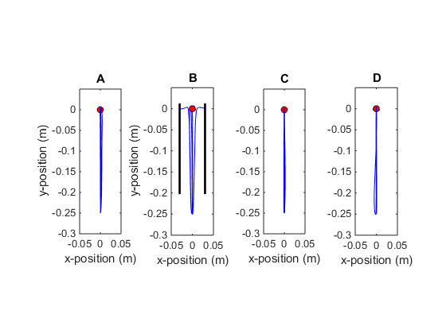
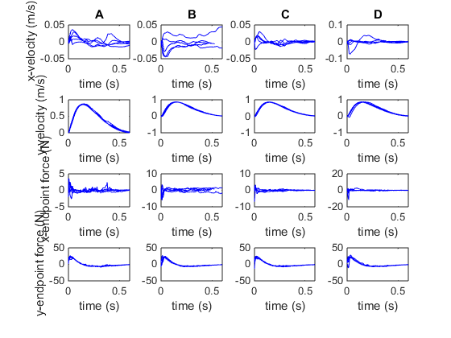
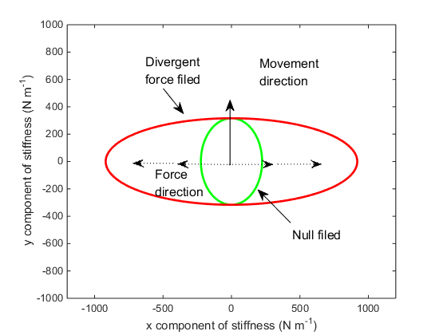
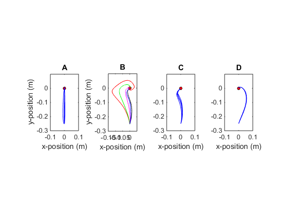
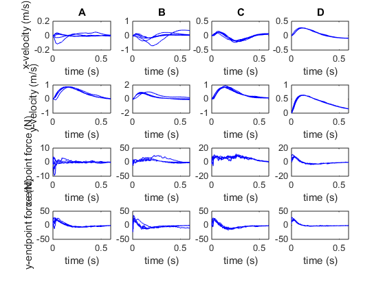
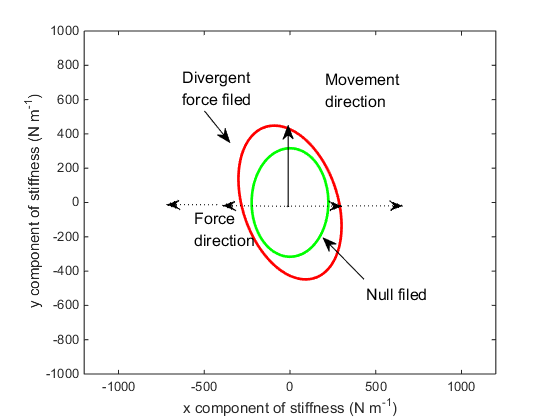
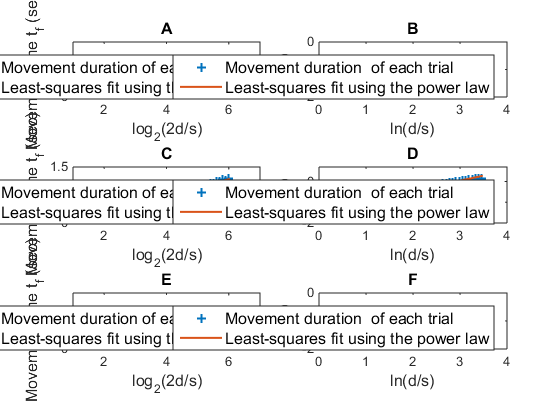

ADP for sensorimotor control
Contents
Simulate the DF
MDF = DFSimulator();
simNF(MDF);
simDF(MDF);
simAL(MDF);
simAE(MDF);
showStiffness(MDF);
  
Simulate the VF
MVF = VFSimulator();
simNF(MVF);
simVF(MVF);
simAL(MVF);
simAE(MVF);
showStiffness(MVF);
Simulating the 2nd trial...
Simulating the 3rd trial...
Simulating the 4th trial...
Simulating the 5th trial...
ans =
Figure (4) with properties:
Number: 4
Name: ''
Color: [0.9400 0.9400 0.9400]
Position: [403 246 560 420]
Units: 'pixels'
Use GET to show all properties
  
Valide Fitts Law
disp('Simulating the NF...')
wdd = 2.2:0.1:6;
r=0.5./(2.^wdd);
T=r;
for i=1:length(r)
disp(['Simulating the NF...', 'Trial: #', num2str(i), ' (', num2str(length(r)-i), 'trials left)'])
MDF.reset();
T(i) = MDF.getMovementDuration(r(i));
end
figure
subplot(321)
fit1l = polyfit(wdd,T,1);
plot(wdd,T,'+',wdd,fit1l(2)+fit1l(1).*wdd,'linewidth',1.5);
axis([1,7,0,0.8]);
xlabel('\fontsize{12}log_2(2d/s)')
ylabel('\fontsize{12}Movement time t_f (sec)')
title('\fontsize{12}A');
legend('\fontsize{12}Movement duration of each trial', '\fontsize{12}Least-squares fit using the log law');
subplot(322)
fit1p = polyfit(log(0.25./r),log(T),1);
plot(log(0.25./r),log(T),'+',log(0.25./r),fit1p(2)+fit1p(1).*log(0.25./r),'linewidth',1.5);
legend('\fontsize{12}Movement duration of each trial', '\fontsize{12}Least-squares fit using the power law');
axis([0,4,-2,0]);
xlabel('\fontsize{12}ln(d/s)');
ylabel('\fontsize{12}ln(t_f)');
title('\fontsize{12}B');
Tvf = zeros(size(r));
for i=1:length(r)
disp(['Simulating the VF...', 'Trial: #', num2str(i), ' (', num2str(length(r)-i), 'trials left)']);
Tvf(i) = MVF.getPostLearningMovementDuration(r(i));
end
subplot(323)
fit2l = polyfit(wdd,Tvf,1);
plot(wdd,Tvf,'+',wdd,fit2l(2)+fit2l(1).*wdd,'linewidth',1.5);
axis([1,7,0,1.5]);
xlabel('\fontsize{12}log_2(2d/s)');
ylabel('\fontsize{12}Movement time t_f (sec)');
title('\fontsize{12}C');
legend('\fontsize{12}Movement duration of each trial', '\fontsize{12}Least-squares fit using the log law');
subplot(324)
fit2p = polyfit(log(0.25./r),log(Tvf),1);
plot(log(0.25./r),log(Tvf),'+',log(0.25./r),fit2p(2)+fit2p(1).*log(0.25./r),'linewidth',1.5);
legend('\fontsize{12}Movement duration of each trial', '\fontsize{12}Least-squares fit using the power law');
axis([0,4,-2,0.7]);
xlabel('\fontsize{12}ln(d/s)');
ylabel('\fontsize{12}ln(t_f)');
title('\fontsize{12}D');
Tdf = zeros(size(r));
for i=1:length(r)
disp(['Simulating the DF...', 'Trial: #', num2str(i), ' (', num2str(length(r)-i), 'trials left)']);
MDF.K = MDF.Ko;
Tdf(i) = MDF.getMovementDuration(r(i));
end
subplot(325)
fit3l = polyfit(wdd,Tdf,1);
plot(wdd,Tdf,'+',wdd,fit3l(2)+fit3l(1).*wdd,'linewidth',1.5);
axis([1,7,0,0.8]);
xlabel('\fontsize{12}log_2(2d/s)');
ylabel('\fontsize{12}Movement time t_f (sec)');
title('\fontsize{12}E');
legend('\fontsize{12}Movement duration of each trial', '\fontsize{12}Least-squares fit using the log law');
subplot(326)
fit3p = polyfit(log(0.25./r),log(Tdf),1);
plot(log(0.25./r),log(Tdf),'+',log(0.25./r),fit3p(2)+fit3p(1).*log(0.25./r),'linewidth',1.5);
legend('\fontsize{12}Movement duration of each trial', '\fontsize{12}Least-squares fit using the power law');
axis([0,4,-2,0]);
xlabel('\fontsize{12}ln(d/s)');
ylabel('\fontsize{12}ln(t_f)');
title('\fontsize{12}F');
disp('Fitting results:')
disp(['NF Log Law:', 'a=',num2str(fit1l(1)), ' b=', num2str(fit1l(2))]);
disp(['NF Power Law:', 'a=',num2str(fit1p(1)), ' b=', num2str(fit1p(2))]);
disp(['VF Log Law:', 'a=',num2str(fit2l(1)), ' b=', num2str(fit2l(2))]);
disp(['VF Power Law:', 'a=',num2str(fit2p(1)), ' b=', num2str(fit2p(2))]);
disp(['DF Log Law:', 'a=',num2str(fit3l(1)), ' b=', num2str(fit3l(2))]);
disp(['DF Power Law:', 'a=',num2str(fit3p(1)), ' b=', num2str(fit3p(2))]);
Simulating the NF...
Simulating the NF...Trial: #1 (38trials left)
Simulating the NF...Trial: #2 (37trials left)
Simulating the NF...Trial: #3 (36trials left)
Simulating the NF...Trial: #4 (35trials left)
Simulating the NF...Trial: #5 (34trials left)
Simulating the NF...Trial: #6 (33trials left)
Simulating the NF...Trial: #7 (32trials left)
Simulating the NF...Trial: #8 (31trials left)
Simulating the NF...Trial: #9 (30trials left)
Simulating the NF...Trial: #10 (29trials left)
Simulating the NF...Trial: #11 (28trials left)
Simulating the NF...Trial: #12 (27trials left)
Simulating the NF...Trial: #13 (26trials left)
Simulating the NF...Trial: #14 (25trials left)
Simulating the NF...Trial: #15 (24trials left)
Simulating the NF...Trial: #16 (23trials left)
Simulating the NF...Trial: #17 (22trials left)
Simulating the NF...Trial: #18 (21trials left)
Simulating the NF...Trial: #19 (20trials left)
Simulating the NF...Trial: #20 (19trials left)
Simulating the NF...Trial: #21 (18trials left)
Simulating the NF...Trial: #22 (17trials left)
Simulating the NF...Trial: #23 (16trials left)
Simulating the NF...Trial: #24 (15trials left)
Simulating the NF...Trial: #25 (14trials left)
Simulating the NF...Trial: #26 (13trials left)
Simulating the NF...Trial: #27 (12trials left)
Simulating the NF...Trial: #28 (11trials left)
Simulating the NF...Trial: #29 (10trials left)
Simulating the NF...Trial: #30 (9trials left)
Simulating the NF...Trial: #31 (8trials left)
Simulating the NF...Trial: #32 (7trials left)
Simulating the NF...Trial: #33 (6trials left)
Simulating the NF...Trial: #34 (5trials left)
Simulating the NF...Trial: #35 (4trials left)
Simulating the NF...Trial: #36 (3trials left)
Simulating the NF...Trial: #37 (2trials left)
Simulating the NF...Trial: #38 (1trials left)
Simulating the NF...Trial: #39 (0trials left)
Simulating the VF...Trial: #1 (38trials left)
Simulating the VF...Trial: #2 (37trials left)
Simulating the VF...Trial: #3 (36trials left)
Simulating the VF...Trial: #4 (35trials left)
Simulating the VF...Trial: #5 (34trials left)
Simulating the VF...Trial: #6 (33trials left)
Simulating the VF...Trial: #7 (32trials left)
Simulating the VF...Trial: #8 (31trials left)
Simulating the VF...Trial: #9 (30trials left)
Simulating the VF...Trial: #10 (29trials left)
Simulating the VF...Trial: #11 (28trials left)
Simulating the VF...Trial: #12 (27trials left)
Simulating the VF...Trial: #13 (26trials left)
Simulating the VF...Trial: #14 (25trials left)
Simulating the VF...Trial: #15 (24trials left)
Simulating the VF...Trial: #16 (23trials left)
Simulating the VF...Trial: #17 (22trials left)
Simulating the VF...Trial: #18 (21trials left)
Simulating the VF...Trial: #19 (20trials left)
Simulating the VF...Trial: #20 (19trials left)
Simulating the VF...Trial: #21 (18trials left)
Simulating the VF...Trial: #22 (17trials left)
Simulating the VF...Trial: #23 (16trials left)
Simulating the VF...Trial: #24 (15trials left)
Simulating the VF...Trial: #25 (14trials left)
Simulating the VF...Trial: #26 (13trials left)
Simulating the VF...Trial: #27 (12trials left)
Simulating the VF...Trial: #28 (11trials left)
Simulating the VF...Trial: #29 (10trials left)
Simulating the VF...Trial: #30 (9trials left)
Simulating the VF...Trial: #31 (8trials left)
Simulating the VF...Trial: #32 (7trials left)
Simulating the VF...Trial: #33 (6trials left)
Simulating the VF...Trial: #34 (5trials left)
Simulating the VF...Trial: #35 (4trials left)
Simulating the VF...Trial: #36 (3trials left)
Simulating the VF...Trial: #37 (2trials left)
Simulating the VF...Trial: #38 (1trials left)
Simulating the VF...Trial: #39 (0trials left)
Simulating the DF...Trial: #1 (38trials left)
Simulating the DF...Trial: #2 (37trials left)
Simulating the DF...Trial: #3 (36trials left)
Simulating the DF...Trial: #4 (35trials left)
Simulating the DF...Trial: #5 (34trials left)
Simulating the DF...Trial: #6 (33trials left)
Simulating the DF...Trial: #7 (32trials left)
Simulating the DF...Trial: #8 (31trials left)
Simulating the DF...Trial: #9 (30trials left)
Simulating the DF...Trial: #10 (29trials left)
Simulating the DF...Trial: #11 (28trials left)
Simulating the DF...Trial: #12 (27trials left)
Simulating the DF...Trial: #13 (26trials left)
Simulating the DF...Trial: #14 (25trials left)
Simulating the DF...Trial: #15 (24trials left)
Simulating the DF...Trial: #16 (23trials left)
Simulating the DF...Trial: #17 (22trials left)
Simulating the DF...Trial: #18 (21trials left)
Simulating the DF...Trial: #19 (20trials left)
Simulating the DF...Trial: #20 (19trials left)
Simulating the DF...Trial: #21 (18trials left)
Simulating the DF...Trial: #22 (17trials left)
Simulating the DF...Trial: #23 (16trials left)
Simulating the DF...Trial: #24 (15trials left)
Simulating the DF...Trial: #25 (14trials left)
Simulating the DF...Trial: #26 (13trials left)
Simulating the DF...Trial: #27 (12trials left)
Simulating the DF...Trial: #28 (11trials left)
Simulating the DF...Trial: #29 (10trials left)
Simulating the DF...Trial: #30 (9trials left)
Simulating the DF...Trial: #31 (8trials left)
Simulating the DF...Trial: #32 (7trials left)
Simulating the DF...Trial: #33 (6trials left)
Simulating the DF...Trial: #34 (5trials left)
Simulating the DF...Trial: #35 (4trials left)
Simulating the DF...Trial: #36 (3trials left)
Simulating the DF...Trial: #37 (2trials left)
Simulating the DF...Trial: #38 (1trials left)
Simulating the DF...Trial: #39 (0trials left)
Fitting results:
NF Log Law:a=0.05832 b=0.12115
NF Power Law:a=0.24525 b=-1.5675
VF Log Law:a=0.22798 b=-0.19291
VF Power Law:a=0.4797 b=-1.3968
DF Log Law:a=0.064231 b=0.093577
DF Power Law:a=0.27257 b=-1.6389
